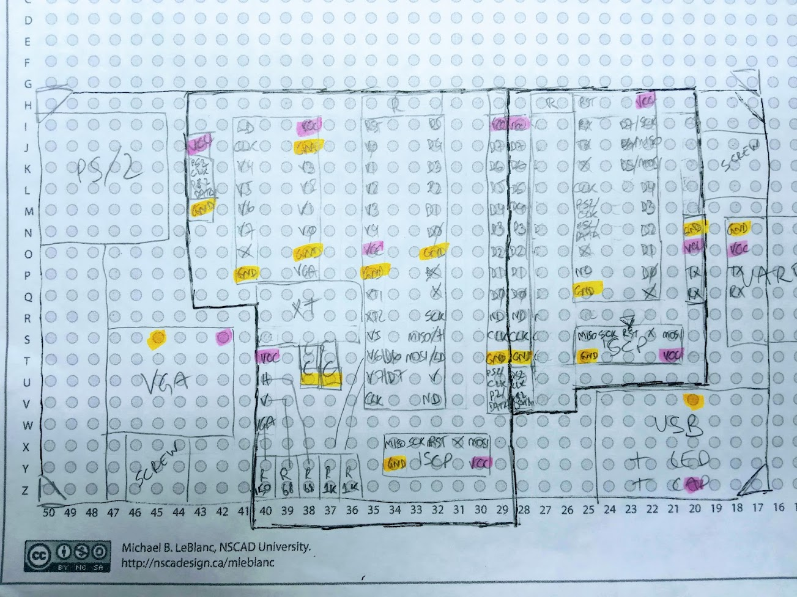
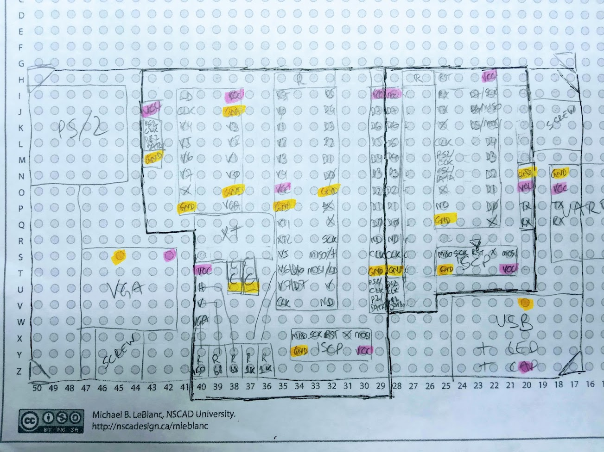
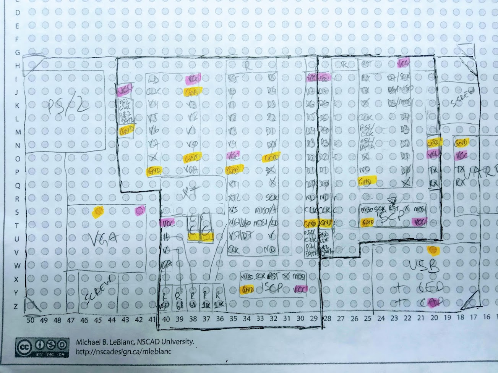

Projects in progress
Fortuna-2
A custom Z80 mini computer that fits in an Altoids tin.
- 0.5 Mhz Z80 CPU
- 32k RAM
- SD Card storage
- UART (can be connected to video and keyboard using Fortuna Terminal)


Emulator
Emulates all Fortuna computers
- Source code emulator
- Runs on PC
- Main development tool for Fortuna
- Allows for checking state of CPU, RAM, SD Card and terminal
Fortuna Terminal
A VT100 terminal emulator
- PS/2 keyboard input
- VGA output
- Uses a ATTINY2313 one to receive keypresses and a AATMEGA328P to generate the video
- Once it's ready, it will fit into an Altoids tin
- Based on the Minimal-Terminal project

 

{kind=link}
{kind=link}
Fortuna-FAT
A FAT16/32 implementation for the Fortuna firmware
- Support to FAT16/32
- Written in C, same code is used in emulator (x64) and firmware (avr)
- Under 8 kB of code and < 768 bytes of RAM
Projects in planning stage
Fortuna-3
A Z80 computer more powerful than Fortuna-2.
- 4 Mhz Z80 CPU
- 128 kB of RAM with bank switching
- SD Card storage
- Real time clock
- Integrated video, audio and keyboard input
{kind=link}
Fortuna OS
A single OS for all Fortuna computers.
- Command shell
- Disk management support
- Multitasking

Projects completed
None yet :-(
Projects abandoned
Fortuna-1
This was to be a Z80 computer. This project was abandoned.
It supported the addition of new boards, expanding functionality. It could also be directly debugged from the computer.
It was too sophisticated for a first computer project, it grew too much in complexity and I ended abandoning the project, and moving to a much simpler alternative.